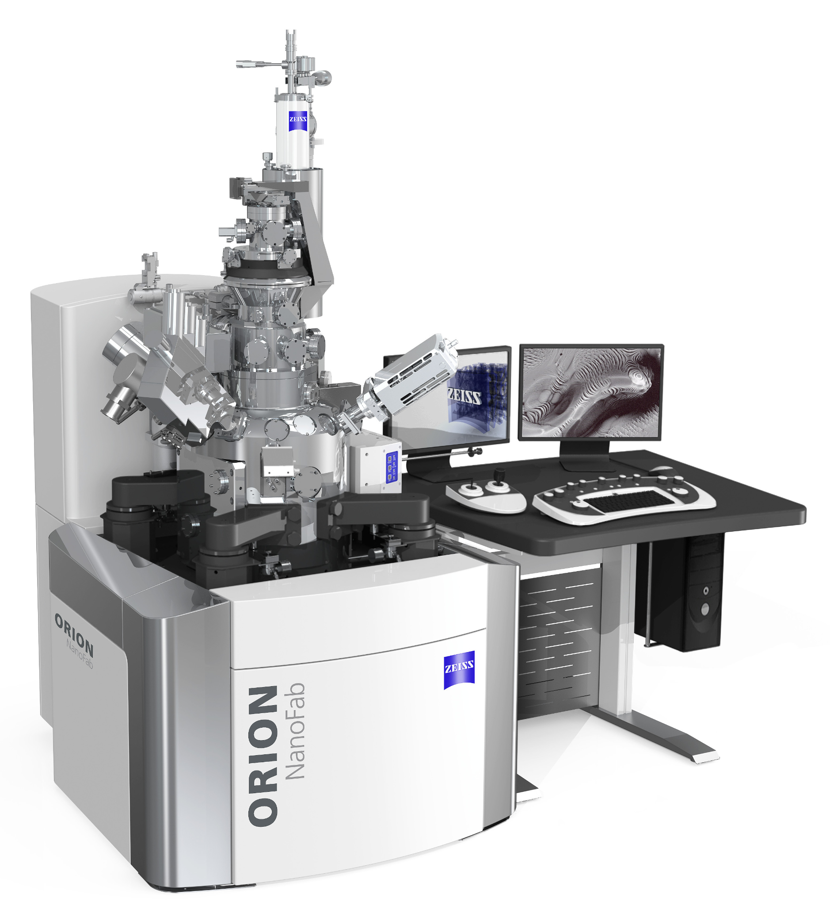

Generated from the maintained Markdown documentation.
Controlled source: online/Markdown documentation. Exported copies may become outdated.
Complete the pre-use checks before beginning a work session.
WARNING
Stop conditions Do not proceed if there are unexplained errors, gun temperature is above about 84 K, less than 2 h LN₂ remains, or vacuum is abnormal. Contact a Superuser.
Cool down body/clothing temperature before entering.
Open System Manager, ZEN (after the server starts), and Tools → Vacuum Screen.
Check error messages and the logbook; check trimer status.
Check gun temperature (local SOP target < ~80 K).
Check LN₂ remaining time; do not proceed if <2 h.
Check vacuum status before loading.
Local SOP: Before Measurement.
Use Sample Management to exchange the holder through the air lock.
Select Exchange .
If the holder is in the chamber, select Transfer , insert the transfer rod steadily, fully couple it to the holder, then retract.
Keep the transfer rod fully retracted before Store ; verify the Rod Retracted interlock.
Select Vent , open the load lock and mount the sample. Photograph the holder position when useful for the Sample Map.
Close the load lock and return to Store . Wait for the load chamber to pump before Transfer.
NOTE
Stage caution Use the chamber camera and established height limits to avoid collisions with the column or detector.
PLACEHOLDER — VERIFY STAGE CLEARANCE: The source SOP includes a stage/holder clearance condition during transfer, but the local documents use different wording and calibration values. Confirm the current safe transfer position/clearance and add it here as an explicit pre-transfer verification.
Confirm the appropriate aperture before turning on the gun.
Power the ET detector; power the flood gun only when needed.
Select helium and allow gas pressure to stabilize.
Set landing energy, aperture and Spot Control for the intended work.
Enable Lens 2 and focus according to the local SOP/training.
WARNING
Operator boundary Do not use Extract Voltage as an ordinary user control unless explicitly trained/authorized.
Move to the standard Au sample / saved reference site.
Rough focus at the documented working distance and use a short dwell time.
Enter SFIM mode and grab an image.
Check whether the designated trimer atom is centered; use Gun Tilt if adjustment is required.
Expose the trimer as briefly as possible, then return to normal imaging/Gun Shift mode.
Tune on a standard sample where possible to minimize exposure of the specimen.
Navigate to the region of interest and use Continuous scanning for setup.
Set the desired beam current/spot, dwell time and scan size.
At a flat region, iteratively correct astigmatism, Gun Shift/wobbler and focus.
For capture, the local SOP suggests line averaging 8/16 and 2 µs dwell; increase dwell when higher quality is required.
Stop scanning, then use Grab and save the image to the approved data location.
Open the Patterning tab and focus before patterning.
Set dose in ions/cm² and verify expected beam current.
Use the local SOP values appropriate to He or Ne and the intended process.
For complex patterns, use NPVE; verify the server/communication connection before starting.
Draw/import patterns, review parameters, select the intended patterns and start from the NPVE GUI.
NOTE
Source note The local SOP records example process values; treat them as local working notes, not universal defaults.
PLACEHOLDER — VERIFY PATTERNING PARAMETERS: The local SOP itself contains “Other patterning parameters?” after the listed dose/current/dwell/pixel-spacing guidance. Define the approved parameter checklist for He, Ne, ZEN and NPVE before treating this page as a complete patterning procedure.
Set up the microscope and save stage positions while still working with helium.
Switch to a neon-compatible aperture before changing gas.
Select Neon in Gas Control and wait for helium evacuation and neon regulation.
Proceed with the normal GFIS workflow and re-check alignment.
WARNING
Aperture warning The ZEISS manual states gold apertures are easily damaged by neon; use the designated neon/moly aperture positions for the installed aperture set.
Return tilt and scan rotation to 0°.
Select Exchange to move to the transfer condition.
Unload the sample using Transfer → Vent → Store, or load the next sample.
Make sure gas is Off / GFIS is in Standby.
Power down the detector as required; return the standard holder/sample according to the local SOP.
Complete the logbook, clean the work area and transfer data using the approved method.
WARNING
Stop and contact a Superuser Unexplained system errors; gun temperature above the permitted range; insufficient LN₂; abnormal vacuum; O₂/fire/facility alarms; unexpected mechanical or transfer behavior.
Normal users should recognize abnormal states but should not attempt chamber venting, high-voltage work, pump recovery, source maintenance or power-outage recovery.